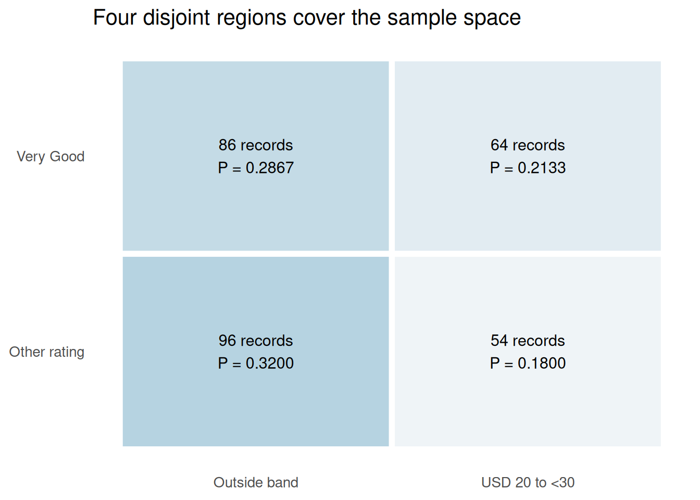

Lesson 1 | Define the outcome before calculating its probability
From description to probability
Module 2 summarized recorded observations. Probability describes uncertainty about an outcome. We begin with a deliberately precise random selection from the same Restaurant data, then use probability models for other textbook settings.
By the end, you should be able to:
Define an experiment, a sample space, an outcome, and an event.
Distinguish equally likely selection, historical relative frequencies, and judgment-based probability.
Calculate complements, intersections, and unions without double counting.
State the reference group and the limits of the answer.
Reading: main textbook, §§4.1–4.3, printed pp.173–190. Restaurant context and counts: Tables 2.9–2.10, pp.65–66. The selection questions below are course adaptations of that checked textbook example.
Business case: select one restaurant record
An analyst has the book’s historical data for 300 Los Angeles restaurants, with quality ratings and meal prices in US dollars. Suppose a computer selects one of these 300 records uniformly at random. What is the probability that the selected restaurant is rated Very Good, has a meal price from USD 20 up to but not including USD 30, or satisfies both conditions? The random outcome is one recorded restaurant; the questions do not predict the current restaurant market.
لدى محلّل بيانات الكتاب التاريخية عن ثلاثمئة مطعم في لوس أنجلوس، وتشمل تقييمات الجودة وأسعار الوجبات بالدولار الأمريكي. لنفترض أن الحاسوب يختار سجلًا واحدًا من هذه السجلات الثلاثمئة عشوائيًا باحتمالات متساوية. ما احتمال أن يكون تقييم المطعم المختار Very Good، أو أن يكون سعر وجبته من 20 دولارًا إلى أقل من 30 دولارًا، أو أن يتحقق الشرطان معًا؟ النتيجة العشوائية هي مطعم واحد مسجّل، ولا تتنبأ هذه الأسئلة بسوق المطاعم الحالي.
Outcomes and events
An experiment is a process with well-defined possible outcomes. Here, the experiment selects one record. The sample space, \(S\), contains all 300 restaurant identifiers. One identifier is one outcome. An event is a set of outcomes satisfying a stated condition.
Define:
\(A\): the selected restaurant is rated Very Good.
The half-open price interval includes USD 20 and excludes USD 30. The possible outcomes are the 300 records, rather than the three rating categories: categories contain different numbers of records and are not equally likely.
Expression
Meaning
R operation
\(A^c\)
Not \(A\)
!A
\(A\cap B\)
Both \(A\) and \(B\)
A & B
\(A\cup B\)
\(A\) or \(B\), including both
A | B
\(S\)
Any possible outcome
All 300 records
Assign a probability for a reason
A probability lies between 0 and 1; the probabilities of all mutually exclusive, exhaustive outcomes sum to 1.
Basis
Why it can be used
Important qualification
Equally likely outcomes
The selection mechanism gives each outcome the same chance
Count favorable outcomes divided by all outcomes only when equal likelihood is justified
Relative frequency
Past observations describe how often an event occurred
Using that frequency for a future outcome assumes the past is relevant
Subjective assessment
Relevant information and professional judgment support an assessment
Document the basis; precision alone does not make the assessment reliable
For the specified uniform selection, each record has probability \(1/300\). Therefore, an event containing \(k\) records has probability \(k/300\). The resulting probabilities are exact for this finite selection experiment. Generalizing them to new restaurants would need additional evidence about sampling and relevance.
# data.frame(): builds a table whose named columns have compatible lengths.# c(): combines values into a vector, converting them to a common type when needed.# nrow(): returns the number of rows in a table or matrix.# sum() counts TRUE event indicators; the denominator is all 300 equally selectable records.# kable() displays counts and probabilities without rounding the underlying calculations.events <-data.frame(Event =c("A: Very Good", "B: USD 20 to <30", "A and B"),Count =c(sum(A), sum(B), sum(A & B)))events$Probability <- events$Count /nrow(r)kable(events, digits =4)
Event
Count
Probability
A: Very Good
150
0.5000
B: USD 20 to <30
118
0.3933
A and B
64
0.2133
Interpretation:\(P(A)=150/300=0.50\), \(P(B)=118/300\approx0.3933\), and \(P(A\cap B)=64/300\approx0.2133\).
Complement and addition rules
The complement contains every outcome outside the event:
\[P(A^c)=1-P(A).\]
Because \(A\) and \(B\) overlap, adding their probabilities counts the overlap twice. Subtract it once:
\[P(A\cup B)=P(A)+P(B)-P(A\cap B).\]
# c(): combines values into a vector, converting them to a common type when needed.# stopifnot(): stops execution if any supplied condition is FALSE; successful checks produce no output.# abs(): returns absolute values; a small tolerance in an equality check permits floating-point rounding.# kable(): formats a data frame or matrix as a readable report table; digits sets displayed precision.# data.frame(): builds a table whose named columns have compatible lengths.# names(): reads or assigns names to vector elements or table columns.# unname(): removes names or dimension names without changing the underlying values.# !, &, and | form the complement, intersection, and inclusive union of event indicators.# Check the addition rule using unrounded values; mean() is the fraction of TRUE records.results <-c("Not Very Good"=mean(!A),"Very Good or USD 20 to <30"=mean(A | B),"Very Good but outside that price band"=mean(A &!B))stopifnot(abs(mean(A | B) - (mean(A) +mean(B) -mean(A & B))) <1e-12)kable(data.frame(Event =names(results), Probability =unname(results)), digits =4)
Event
Probability
Not Very Good
0.5000
Very Good or USD 20 to <30
0.6800
Very Good but outside that price band
0.2867
The union contains \(150+118-64=204\) records, so its probability is 0.68. “Or” includes restaurants that satisfy both conditions. “Exactly one of the conditions” is a different event: exclude the overlap from that union.
Two events are mutually exclusive when they cannot occur together. For example, Very Good and Excellent are mutually exclusive ratings for one selected restaurant. In that situation \(P(A\cap B)=0\), so the addition rule has no overlap term. Our rating and price events are not mutually exclusive.
# data.frame(): builds a table whose named columns have compatible lengths.# rep(): repeats values; times repeats a vector and each repeats individual elements.# c(): combines values into a vector, converting them to a common type when needed.# sum(): adds vector entries; on logical values it counts TRUE entries.# paste0(): joins text with no separator; collapse can combine a vector into one string.# sprintf(): formats text using placeholders such as %.2f for two decimal places.# stopifnot(): stops execution if any supplied condition is FALSE; successful checks produce no output.# ggplot(): starts a plot from data; additional layers are joined with +.# aes(): maps variables to visual properties such as x, y, fill, color, or group.# geom_text(): draws labels from mapped data; position and hjust/vjust control placement.# scale_fill_gradient(): maps numeric values to a continuous fill-color gradient.# labs(): sets axis titles, legend titles, plot titles, and captions.# theme(): customizes non-data plot elements such as legends, grids, and axis text.# element_blank(): removes the selected non-data plot element.# The four disjoint cells partition all 300 records; their counts must add to the total.# geom_tile() shows region membership; labels carry the counts so color is not essential.regions <-data.frame(Rating =rep(c("Very Good", "Other rating"), each =2),Price =rep(c("USD 20 to <30", "Outside band"), 2),Count =c(sum(A & B), sum(A &!B), sum(!A & B), sum(!A &!B)))regions$Label <-paste0(regions$Count, " records\nP = ", sprintf("%.4f", regions$Count /300))stopifnot(sum(regions$Count) ==300)ggplot(regions, aes(Price, Rating, fill = Count)) +geom_tile(color ="white", linewidth =2) +geom_text(aes(label = Label), size =4) +scale_fill_gradient(low ="#EFF4F7", high ="#B6D3E1", guide ="none") +labs(x =NULL, y =NULL, title ="Four disjoint regions cover the sample space") +theme(panel.grid =element_blank())

Original R illustration from the checked Restaurant CSV. Cells represent event regions, not geographic locations or additional observations.
Counting possibilities is not assigning probabilities
For two distinct restaurant records selected without replacement, there are \(300\times299\)ordered pairs. If order is irrelevant, each pair has been counted twice, giving \(300\times299/2=44{,}850\)unordered pairs. More generally, choose(N, n) counts selections of \(n\) objects from \(N\) when order does not matter.
# kable(): formats a data frame or matrix as a readable report table; digits sets displayed precision.# data.frame(): builds a table whose named columns have compatible lengths.# c(): combines values into a vector, converting them to a common type when needed.# choose(300, 2) counts pairs without order; 300*299 counts first-then-second selections.# Counts become probabilities only after a selection mechanism and an event are specified.kable(data.frame(Selection =c("Ordered pair", "Unordered pair"),Possibilities =c(300*299, choose(300, 2))))
Selection
Possibilities
Ordered pair
89700
Unordered pair
44850
Before moving on
For every answer, state the experiment, the event, the denominator, and the interpretation. A probability of 0.68 means 68% under repeated selections using this mechanism; it does not guarantee exactly 68 matching records in every 100 selections.
Main reference: Anderson et al. (2020), Essentials of Modern Business Statistics with Microsoft Excel, 8th ed., §§4.1–4.3 and Tables 2.9–2.10. Probability questions and charts are original course adaptations. Restaurant CSV and data guide: 300 rows; first 10 displayed records and all 12 printed crosstab cells match. Remaining individual rows were not printed for comparison. The probabilities above depend only on checked aggregate counts.